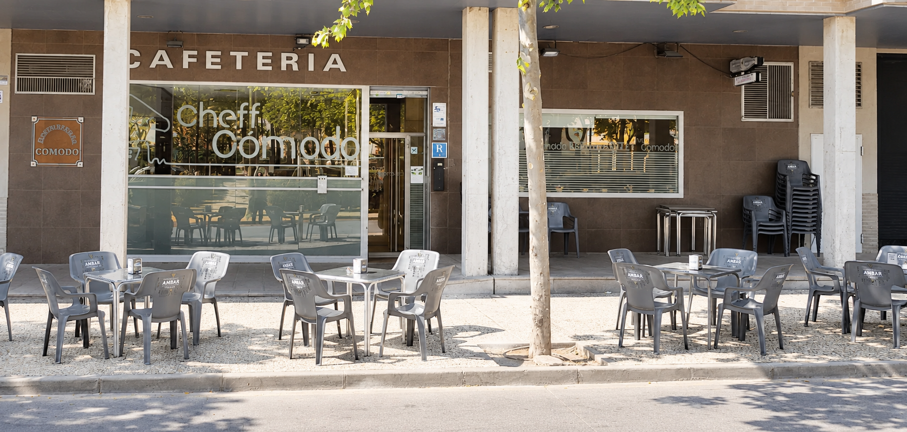

BIENVENIDO A CHEFF CÓMODO
TU MESA.
TU GENTE.
TU BAR.
Comidas, cenas y buenos ratos.
Ven a disfrutar y, sobre todo, a comer.
EL PLAN DE SIEMPRE.
EN TU SITIO DE SIEMPRE.
MEJOR COMPAÑÍA
BIENVENIDO A CHEFF CÓMODO
AQUÍ SE VIENE
A ESTAR A GUSTO.
Un café para arrancar, una comida en buena compañía o una cena con los tuyos. En Cheff Cómodo hay un plan para cada momento.
Nos encontrarás en la avenida Jota, en Garrapinillos. Con terraza para disfrutar al aire libre y un buen ambiente para seguir el deporte en compañía.
Nos vemos en Garrapinillos
HACEMOS SITIO PARA TI
¿COMIDA O CENA?
HAZ TU PLAN.
Para reservar una comida o cena, llámanos. Dinos el día, la hora y cuántos sois; confirmaremos contigo la disponibilidad.
Tu próxima comida o cena.
Llámanos para consultar disponibilidad y reservar tu mesa.
Llamar para reservar976 97 95 85
Reservas exclusivamente por teléfono. Tu mesa quedará confirmada durante la llamada con el bar. Consulta nuestro horario de apertura antes de llamar.
ASÍ SOMOS
ESTE ES
NUESTRO SITIO.
Platos, postres y buenos ratos.
Así se disfruta en Cheff Cómodo.
Fotos de platos publicadas en la galería de Cheff Cómodo en Restaurant Guru. Consulta con el bar la disponibilidad actual. Las imágenes del local son versiones adaptadas de las fotos facilitadas.
SIN COMPLICACIONES
EL PLAN ES FÁCIL.
VEN CON LOS TUYOS.
Un rato en la terraza. El partido con los amigos.
O ese café que se convierte en una buena conversación.
TU PUNTO DE ENCUENTRO
ESTAMOS
MUY CERCA.
Nos vemos en la avenida Jota, 18.
Para un café, un rato de terraza o el próximo partido.
50190 Garrapinillos, Zaragoza También estamos en FacebookEl día a día de Bar Cheff Cómodo
CUÁNDO NOS VEMOS
Elige el tuyo. Este es nuestro horario:
| Lunes | – |
|---|---|
| Martes | – |
| Miércoles | – |
| Jueves | – |
| Viernes | – * |
| Sábado | – * |
| Domingo | Cerrado |
* Viernes y sábado cerramos a la 01:00 de la madrugada del día siguiente.
¿Nos llamas? 976 97 95 85